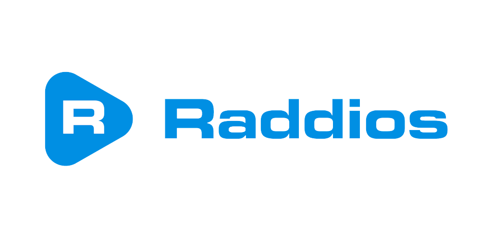

Bienvenidos a Los Nostálgicos radio online
aquí podrás escuchar o re escuchar esos temas que te hicieron sentir viv@
con lo mejor del Rock y el Pop internacional de los 70's, 80's y 90's
Los horarios de nuestros programa son hora local Argentina
Descargar la APP de la radio
Contáctanos
También nos puedes encontrar en:
